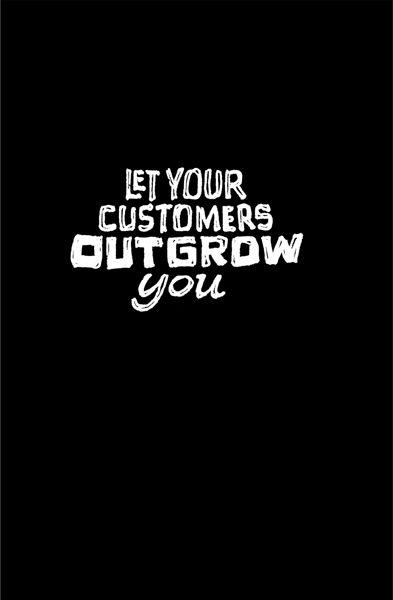

{% include JB/setup %}
{% raw %}
<div>

<h2 id="filepos159402" class="calibre19"><span class="calibre2"><a class="calibre13"></a><strong class="calibre14">Say no by default</strong></span></h2><div class="calibre4"></div>
<div class="calibre4"><blockquote class="calibre5"><span class="calibre6">
<p class="calibre3"><em class="italic1">If I'd listened to customers,<br class="calibre25"/>I'd have given them a faster horse</em>.</p><div class="calibre4"></div>
<p class="calibre3">--HENRY FORD</p><div class="calibre4"></div>
</span></blockquote></div><div class="calibre4"></div>
<p class="calibre7">It's so easy to say yes. Yes to another feature, yes to an overly optimistic deadline, yes to a mediocre design. Soon, the stack of things you've said yes to grows so tall you can't even see the things you should really be doing.</p>
<p class="calibre17">Start getting into the habit of saying no--even to many of your best ideas. Use the power of no to get your priorities straight. You rarely regret saying no. But you often wind up regretting saying yes.</p>
<p class="calibre17">People avoid saying no because confrontation makes them uncomfortable. But the alternative is even worse. You drag things out, make things complicated, and work on ideas you don't believe in.</p>
<p class="calibre17">It's like a relationship: Breaking one up is hard to do, but staying in it just because you're too chicken to drop the ax is even worse. Deal with the brief discomfort of confrontation up front and avoid the long-term regret.</p>
<p class="calibre17">Don't believe that "customer is always right" stuff, either. Let's say you're a chef. If enough of your customers say your food is too salty or too hot, you change it. But <a class="calibre16"></a>if a few persnickety patrons tell you to add bananas to your lasagna, you're going to turn them down, and that's OK. Making a few vocal customers happy isn't worth it if it ruins the product for everyone else.</p>
<p class="calibre17">ING Direct has built the fastest-growing bank in America by saying no. When customers ask for a credit card, the answer is no. When they ask for an online brokerage, the answer is no. When they ask if they can open an account with a million dollars in it, the answer is no (the bank has a strict deposit maximum). ING wants to keep things simple. That's why the bank offers just a few savings accounts, certificates of deposit, and mutual funds--and that's it.</p>
<p class="calibre17">Don't be a jerk about saying no, though. Just be honest. If you're not willing to yield to a customer request, be polite and explain why. People are surprisingly understanding when you take the time to explain your point of view. You may even win them over to your way of thinking. If not, recommend a competitor if you think there's a better solution out there. It's better to have people be happy using someone else's product than disgruntled using yours.</p>
<p class="calibre17">Your goal is to make sure your product stays right for you. You're the one who has to believe in it most. That way, you can say, "I think you'll love it because I love it."</p>
<p class="calibre3"><a class="calibre16"></a></p><div class="calibre4"></div>
</div>

{% endraw %}

